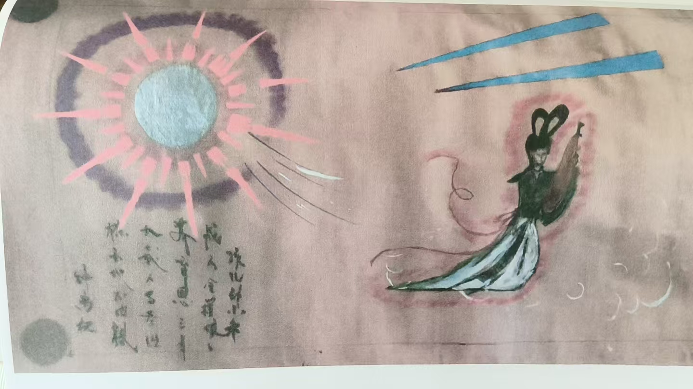
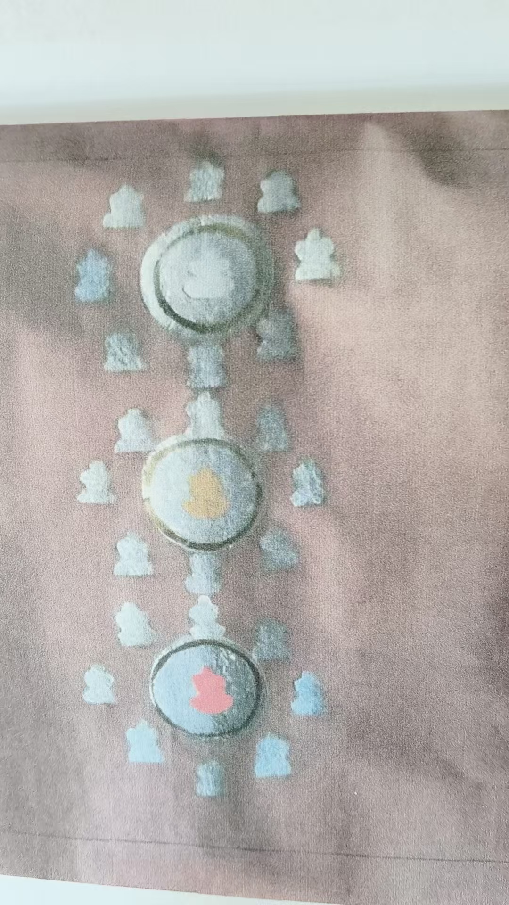
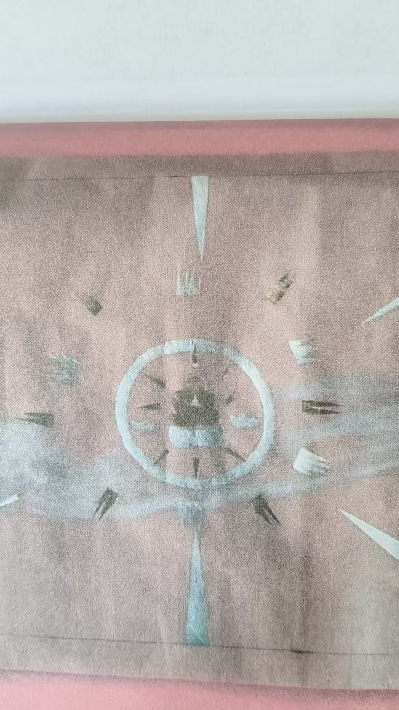
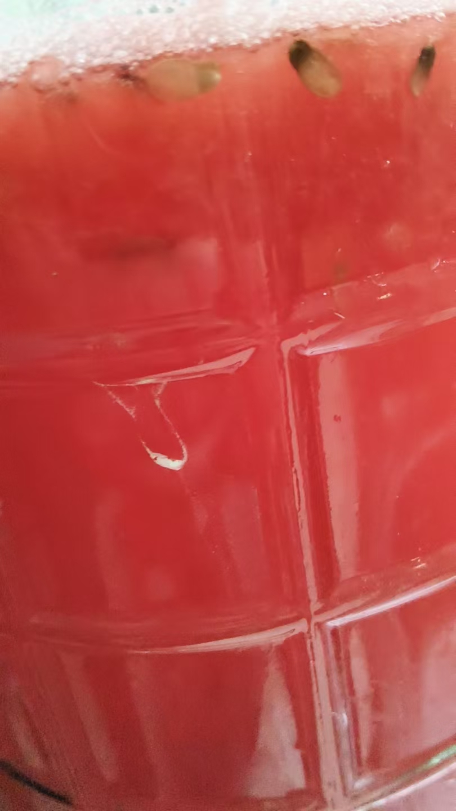

20261006任何事都要选择一下 记得是用脑屏
修炼修行 原始对话记录各种术，要随时演练
越用越灵
比如，脑屏做选择
可以给自己选择，也可以给他人选择
任何事都要选择一下
记得是用脑屏
忘记大脑这回事
验证准确率百分百
这也是初步开悟
这不就是两张牌打开脑屏的实战应用吗
学完了，就用
越看越清晰
舍得自己，放下自己
菩萨
利他之心
肉身在这五浊恶世，多多少少有些杂质
重了肉身，心不够晶莹
所有功能，超能力，自然隔绝在外
记得我说的，身体越通透，眼睛越清楚
相辅相成
忘却肉身，不是说不上班了，什么也不做，
是打坐的时候，养成习惯，迅速让思想分化，清净心态
有一句话，叫静坐长思自己过
想一天的经过，把凡间的事处理好
父母妻儿，左邻右舍，同事亲戚朋友
处理好了，才能清净的打坐
凡事跟清修混在一块，那一样也做不好
本来人间事就多，当时处理不了的，就放开，第二天去做
不掺杂世事，打坐的时候，才容易进入空我状态
嗯
自己肉体感觉都找不到了
进入功态，才容易提升
我离家近，三天两头回去，看看，一切平安平稳，那也就放心了
父母不是不管，而是管好
[呲牙][呲牙][呲牙]
我讲的，分身遍布
过去世界
现在世界
未来世界
华严经里讲的更好
比我更上十二层楼
经理说，脚底放出居士，遍满三千大千世界恒河沙数
膝盖放真人，遍满三千大千世界恒河沙数
一直到头顶，放佛祖，遍满三千大千世界恒河沙数
遍满过去未来现在世界
所以，比我讲的更精细

分身化身


汇聚成佛
我画这图的时候十几岁
都是眼睛看到的
那时候，没有任何佛经道经之类
我师傅见了都大吃一惊
你怎么有这些，这是内丹图
那时候我哪知道
现在看到这些图，跟地藏经，法华经，华严经，说的一模一样
不能不说奇迹
[强][强][强]
十几岁的时候，能力很大，不仅到处治病
那时候，我的两个同学，我教给他们，隔十几米，推着玩
真能推动
一个西村，一个北村，到现在还是很要好，不过他们一直没修

西瓜果酒
用西瓜发酵成酒？
[呲牙][呲牙]
就是做着玩
其实不好喝
做酒培训的时候，老师做过
直接说并不好喝
任何事都要选择一下：记得是用脑屏
一、本页是什么
本页的核心只有一句话："任何事都要选择一下，记得是用脑屏。" 也就是把"脑屏"（闭眼在脑中成像）用在日常做选择上——给自己选，也替别人选。围绕这句，作者还讲了"忘却肉身""打坐前的准备"，以及分身化身等话题。这里分层整理。
二、"脑屏做选择"的用法
原记录的要点：
- 越用越灵："各种术要随时演练"；
- 对象不限：可以给自己选，也可以给他人选；
- 关键动作："记得是用脑屏，忘记大脑这回事"——意思是别用逻辑分析，用脑中成像；
- 说法："验证准确率百分百""这也是初步开悟"。
关于"百分百"，请参见本集群《脑屏炒股》一节的说明——这类断言无法验证。
三、"忘却肉身"与打坐前的准备
原记录把"忘掉肉身"解释为两层意思：
- 不是不做凡间事、不上班；
- 而是打坐时养成习惯，迅速"让思想分化、清净心态"。
具体做法是先"静坐长思自己过"——把一天的经过想一遍，把父母妻儿、邻居同事的事"处理好"，才能"清净地打坐"。作者说"凡事跟清修混在一块，那一样也做不好"。
四、分身化身类说法
原记录援引《华严经》，说分身"遍满过去、现在、未来世界"，并举例"脚底放居士……膝盖放真人……头顶放佛祖，遍满三千大千世界"。作者还提到自己十几岁画过类似的"内丹图"。这些属经典意象与个人叙述，本站作为文化内容记录，不作评断。
五、常见问题
问："用脑屏做选择"和用直觉有什么区别？ 原记录强调"别用大脑想"，其实就是把判断交给"成像 / 直觉"。可把它当专注力与决策练习，但结果不保证正确。
问：真能"百分百准确"吗？ 不能。任何"百分百"的说法都应存疑，重大决定请依据事实与专业意见。
问：分身、《华严经》那些是修行吗？ 《华严经》的"分身"是宗教经典的意象表达；把它当作现实能力去追求，本站不提倡。
六、提醒
- 本页核心是"脑屏随时做选择"这一练习；
- "准确率百分百""分身"等说法无实证，切勿当真；
- 全站内容仅供传统文化研究参考。